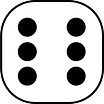

十八豆仔
|  |
|---|
請擲骰
遊戲規則
- 參與者有莊家一人及閒家數人。
- 每局開玩前，閒家先各自下注於自己面前。接著由莊家先擲骰子，再依序由各閒家逐一擲骰子，以所得點數大小與莊家分勝負。
- 計點方式係先扣除2顆點數相同的骰子，其餘2顆點數合計即為其所得點數。 若有兩組骰子點數相同，則以點數較大者之合計為其所得點數。有3顆骰子相同且另一顆不同，也必須重擲。
- 所得點數最大為12點，稱為「十八」（si̍p-pat）；最小為3點，稱為「扁膣」(發音類似BG)。
- 若四顆骰子正面均相同，稱為「一色」（外省人稱豹子），不論點數多寡，均以勝計。
- 若所擲骰子正面均不相同，稱為「無面」或「無點」，應重新擲至有點數為止。
詳見 維基百科 - 十八仔